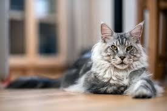

Copyrighted Material
The American Association of Patriots Present:
HOW TO TALK
TO YOUR CAT ABOUT
GUN SAFETY
ABSTINENCE, DRUGS, SATANISM AND OTHER
DANGERS THAT THREATEN THEIR NINE LIVES

Copyrighted material
How to Talk to Your Cat About Gun Safety: And Abstinence, Drugs,
Satanism, and Other Dangers That Threaten Their Nine Lives
by Zachary Auburn (Author)
The cats of america are under seige!
Long gone are the good old days when a cat’s biggest worries were mean
dogs or a bad tuna.
Modern cats must confront satanists, online predators,
the
possibility of needing to survive in a post-apocalyptic wasteland, and countless other threats to their nine lives.
For over four decades, the American Association of Patriots have stood at
the vanguard of our country's defense
by helping to prepare our nation's cat
owners for the difficult conversations they dread having with their pets.
Written in a simple Q&A format, How to Talk to Your Cat About Gun Safety
answers crucial questions such as,
“What is the right age to talk to my cat
about the proper use of firearms?”
and “What are the benefits of my cat
living a lifestyle of abstinence?” and especially
“Why does my cat need to
use the internet? Can’t he just play with yarn like cats used to do?”